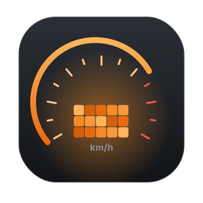

Trascina qui i video della moto
Il numero della velocità viene coperto da solo. Anche facce e targhe, se vuoi.
MP4, MOV, MKV, AVI e foto JPG, PNG, WEBP · tutto resta sul tuo computer
La zona tratteggiata è quella che verrà coperta. Doppio clic sulla zona per regolarla.
· Avvio…
Generale
Come lavora Velocità.
Forza e margine della copertura si regolano a destra dell'anteprima, mentre guardi il video.
Aspetto
Come appare Velocità.
La lingua cambia al prossimo avvio di Velocità.
Display
Come l'app riconosce il display della moto.
Prestazioni
Quanto del computer usa Velocità mentre lavora.
Quando è possibile il video viene creato con il chip del Mac o con la scheda video su Windows (NVIDIA, Intel, AMD): è molto più veloce.
Aggiornamenti
Le versioni nuove arrivano da GitHub.
I tuoi video non vengono mai inviati in internet: tutto avviene sul computer.
Sposta il cursore per trovare un punto dove il display si vede bene.